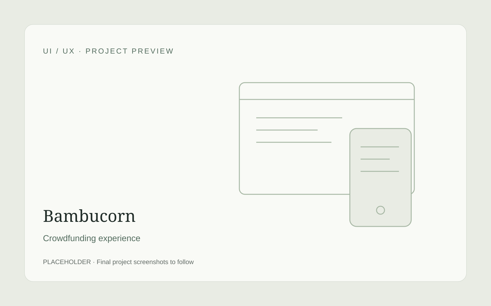
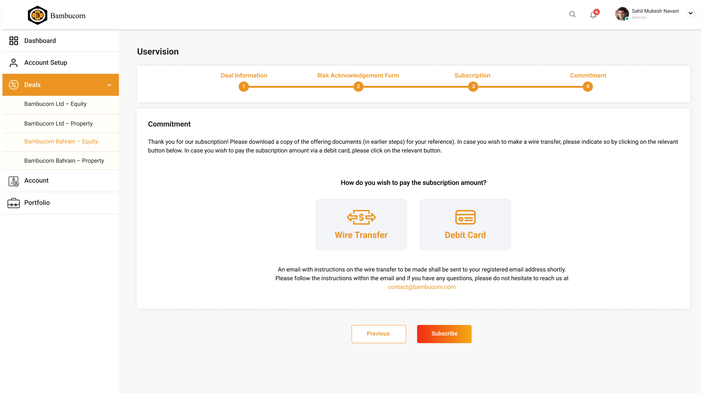
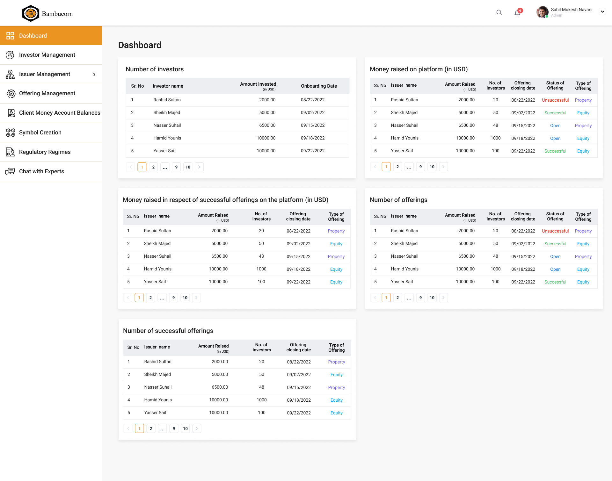
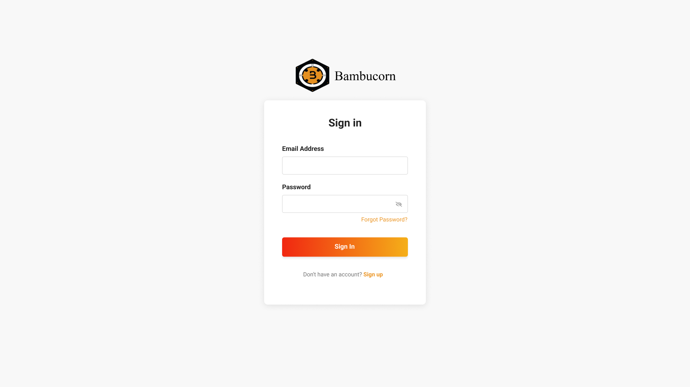

Discover opportunities, verify identity and access investment actions.
Bambucorn / UI & UX design
From first interest to confident participation.
Bambucorn enables investors to participate in equity and debt opportunities while helping entrepreneurs and property owners raise capital. The design challenge was to make onboarding, verification and role-based access feel understandable without making the experience feel bureaucratic.

01 · Context
When money and identity are involved, clarity becomes part of trust.
Bambucorn is licensed by the Central Bank of Bahrain and supports both investors and fundraisers. That means the platform has to balance discovery and ambition with identity checks, role-specific requirements and regulated access.
This was also my first complete Figma project. I designed the website, onboarding journeys, user flows, UI screens and an interactive prototype that stakeholders could use to test form behavior and discuss third-party verification/API touchpoints.
Create profiles, prepare campaigns and manage fundraising activity.
Move through a similar regulated journey with role-specific information needs.
02 · Design approach
Make the regulated path feel like a guided conversation.
Start with intent
Identify whether the user is investing or raising funds before asking for deeper information.
Progressive verification
Introduce identity and prescribed checks at the moment they become relevant.
Role-based access
Keep dashboards and actions aligned to what each user is actually allowed to see or do.
Prototype the handoffs
Use a connected Figma prototype to test forms, status changes and external verification moments.
03 · Core flow
A simple mental model for a more complex system.
Sign up
Create an account and establish basic profile information.
Select role
Identify the user’s relationship to the platform.
Verify identity
Move through government-prescribed / third-party verification.
Enter the right experience
Return verified users to role-appropriate platform access.
04 · Selected screens
Key moments from onboarding to role-based access.
 View full screen ↗
View full screen ↗Investor dashboard
Keep commitments and deal activity in view.
 View full screen ↗
View full screen ↗Opportunity discovery
Compare available opportunities in a repeatable card system.
 View full screen ↗
View full screen ↗Account verification
Organise identity requirements into explicit steps.
 View full screen ↗
View full screen ↗Deal summary
Bring key investment information into one review.
 View full screen ↗
View full screen ↗Risk acknowledgement
Make required decisions explicit before commitment.


View full screen ↗Investment commitment
A focused step for recording participation.
Explore 7 more project screens +
 View full screen ↗
View full screen ↗Account Setup Gate Sahil 5
Additional interface state from the supplied project screens.
 View full screen ↗
View full screen ↗Account Setup Gate Sahil sign 2
Additional interface state from the supplied project screens.


View full screen ↗Admin Dashbaord
Additional interface state from the supplied project screens.
 View full screen ↗
View full screen ↗Deal-bahrain 1
Additional interface state from the supplied project screens.


View full screen ↗Login
Additional interface state from the supplied project screens.
 View full screen ↗
View full screen ↗Sign up
Additional interface state from the supplied project screens.
 View full screen ↗
View full screen ↗Startup Page bahrain
Additional interface state from the supplied project screens.
05 · Interactive prototype
Let stakeholders experience the form, not just review screens.
The interactive Figma prototype helped make discussions more concrete. Stakeholders could move through forms, see branching behavior and discuss integration points before development.
Open Figma project06 · Outcome
A more understandable path into a regulated platform.
A shorter, more guided enrollment path reduces unnecessary upfront complexity.
Verification is treated as a visible process rather than a mysterious interruption.
Role-based access keeps sensitive features and actions aligned to permission.
Reflection
My first Figma project changed how I thought about product design.
It pushed me beyond designing individual screens and into designing behavior—forms, branches, permissions and system handoffs. That shift has stayed with me in every complex product project since.
Back to UI/UX work →